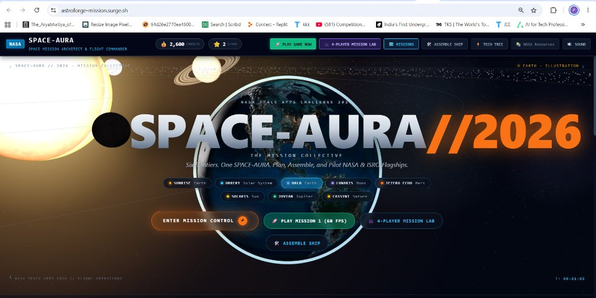
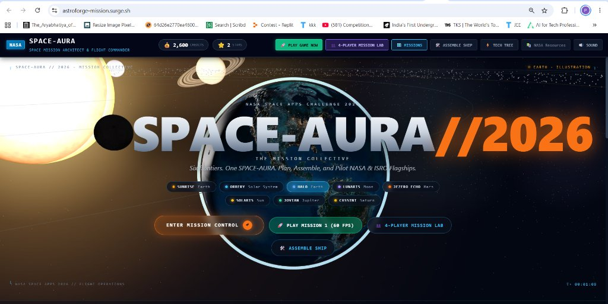
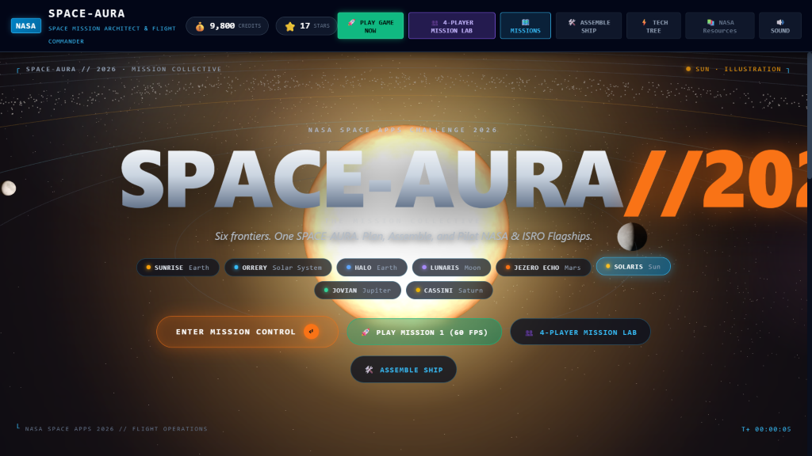
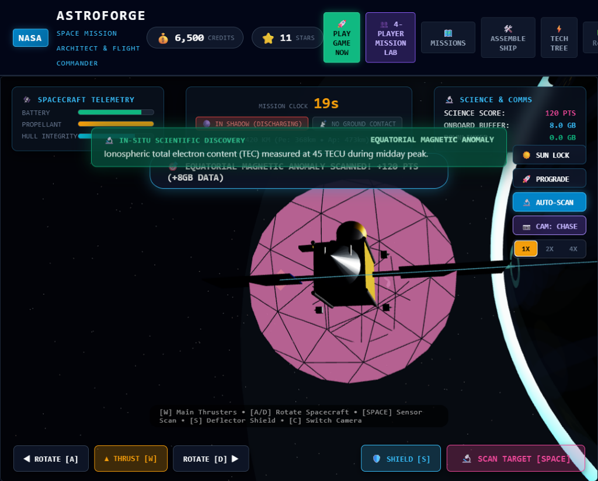
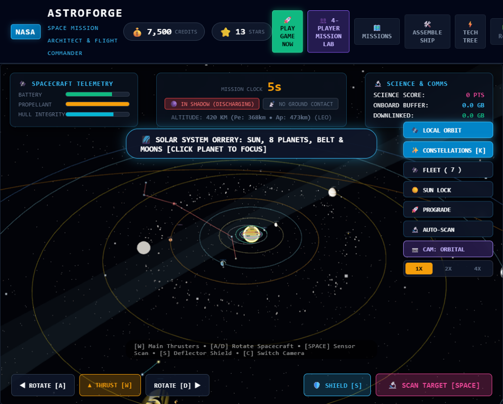
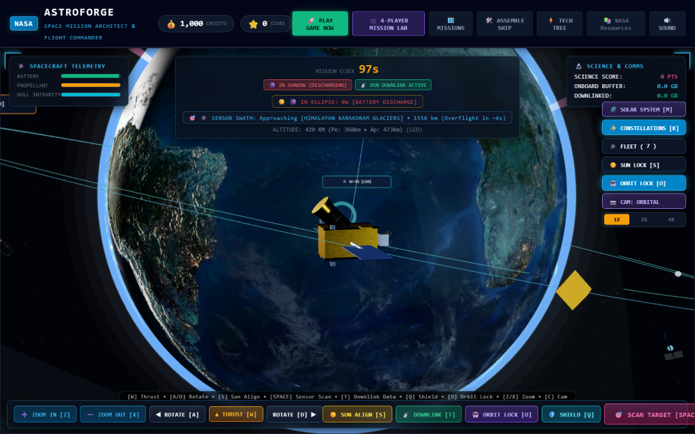
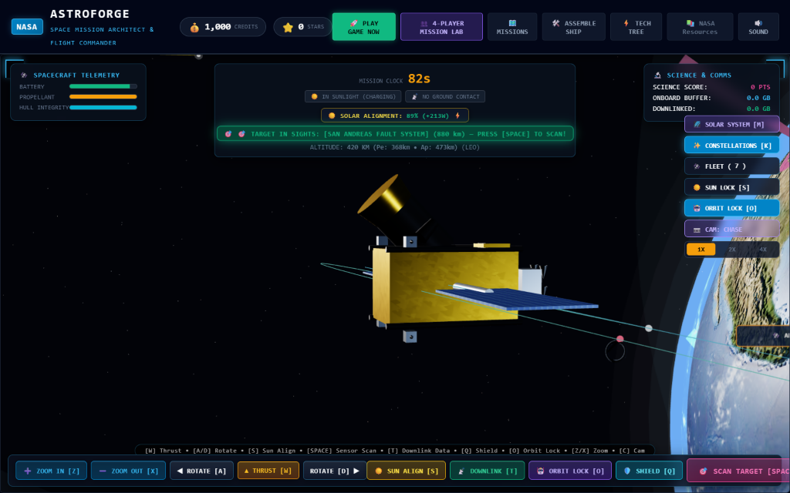

SPACE-AURA: Space Mission Design & 3D Flight Operations Simulator
Merging collaborative systems engineering with 60 FPS Keplerian flight simulation.
EXECUTIVE SUMMARY FOR THE JUDGES
- Challenge Response: An interactive simulation platform that teaches students and teams how to design, manage, and fly a complete space mission.
- Dual-Core Architecture: Integrates the strategic 4-Player NASA Mission Design Lab (MDL) with an authentic 3D Terrestrial Launch Pad & Orbital Flight Arena.
- Authentic Flight Hardware: Real 3D models of NASA SLS, Falcon 9, Falcon Heavy, and ISRO Flagships (LVM3 'Bahubali' and PSLV-XL) with real multi-stage jettison physics.
- Real Flagship Campaigns: NASA-ISRO NISAR, Chandrayaan-3, Aditya-L1, Mangalyaan, Artemis II Orion, and JWST.
- Permanent Public Hosting: Fully deployed and globally accessible right now at astroforge-mission.surge.sh.

Full 3D Revolving Solar System & Celestial Orrery
Simulating Keplerian planetary orbits, dynamic solar coronal shaders, asteroid belt, and real-time planetary focus.
PLANETARY MECHANICS & CELESTIAL ARCHITECTURE
- 1. Dynamic Coronal Noise Shader (The Sun):
• Animated Fractional Brownian Motion (FBM) noise simulating solar convection granules, CME flares, and limb darkening.
• High-intensity omnidirectional PointLight (3,500 range) illuminating all planetary bodies. - 2. All 8 Orbiting Planets + Moons (Kepler's 3rd Law):
• Semi-major axis & period relation: T² ∝ a³. Mercury, Venus, Earth with orbiting Moon, Mars, Jupiter with Galilean moons, Saturn with 3D tilted rings, Uranus, and Neptune.
• Luminous anti-aliased Keplerian orbit track loops showing true orbital inclination and geometry. - 3. Main Asteroid Belt (2,200 Revolving Rocks):
• Toroidal belt particles drifting between Mars (1.52 AU) and Jupiter (5.2 AU) with dwarf planet Ceres. - 4. Interactive 1-Click Camera Focus (Smooth Lerp):
• Click any destination pill to smoothly glide camera into orbit around Saturn's rings, Mars, Moon, or return to the Earth orbital sunrise!


Mission Design Lab: 4-Player Collaborative Systems Engineering
Modeled after NASA JPL Team X: Empowering students to resolve authentic mass, power, comms, and budget trade-offs.
NASA JPL TEAM X CONCURRENT DESIGN METHODOLOGY
- 4 Specialized Collaborative Roles: Real space missions require interdisciplinary teamwork. SPACE-AURA implements 4 distinct seats:
• Mission Commander: Budget ($32M–$180M), timeline & charter objectives.
• Flight Dynamics Officer (FDO): Launch vehicle selection, spaceport latitude & orbital inclination.
• Systems Engineer: Mass margins (≥15% required), solar panel wattage & battery depth of discharge (DoD ≤30%).
• Science Payload Director: Sensor selection (SAR radar, coronagraph, spectrometer). - Dynamic Constraint Verification Engine:
• Real-time constraint evaluation on Mass Margin (kg), Power Balance (W vs solar flux), and Link Budget.
• Launches are locked until all engineering constraints evaluate positive!

Authentic Launch Vehicles & Rocket Staging Physics
Shedding structural dead weight through Tsiolkovsky rocket equation staging lifecycle.
TSIOLKOVSKY STAGING: Δv = Isp · g₀ · ln(m₀ / mf)
- Authentic 3D Rocket Models:
• NASA SLS Artemis Block 1B: 95,000 kg LEO, RS-25 cryogenic core + twin 5-segment SRBs.
• SpaceX Falcon 9 / Heavy: Octaweb engine clusters and recoverable booster stages.
• ISRO LVM3 ('Bahubali'): Twin massive S200 solid rocket boosters + Vikas liquid core + C25 cryogenic upper stage.
• ISRO PSLV-XL: 4-stage solid/liquid workhorse with 6 PSOM-XL strap-on motors. - Interactive Staging Lifecycle:
1. T-10s Terminal Countdown: Deluge water sound suppression & hold-down clamp release.
2. Atmospheric Gravity Turn: Steerable downrange pitch program [A] / [D].
3. Stage 1 MECO & Booster Jettison: Sheds 76% vehicle mass upon burnout.
4. Aerodynamic Fairing Jettison: Discards 1,800 kg fairing above 105 km.
5. SECO & Payload Separation: Spacecraft deployment into orbit at 7,800 m/s.

NASA 4K Blue Marble Topography & Advanced PBR Shader Pipeline
Matching Astra Nexus clarity: elevation bump relief, ocean specular sheen, nocturnal city lights, and Rayleigh limb glow.
PHOTOREALISTIC 3D SHADER ENGINEERING
- 1. NASA 4K Blue Marble Topography & Bump Relief:
• SphereGeometry(radius, 192, 128) for ultra-smooth circular planetary limb without faceting.
• Integrated NASA elevation relief mapping (bumpScale: 1.6) and roughness/specular ocean reflection maps. - 2. Smoothstep Day/Night Terminator Shader:
• Injected custom fragment chunk: dot(normal, lightDir) evaluated across terminator.
• smoothstep(0.12, -0.18, nxl) dynamically illuminates nocturnal city lights in warm amber (0xffd59e) with 0 bleeding into daytime. - 3. Rayleigh Atmospheric Scattering Limb Glow:
• Inverted Fresnel BackSide limb glow shader combined with 4 concentric Rayleigh haze shells (r = 1.04 to 1.16). - 4. Spacecraft PBR Materials:
• Procedural silicon wafer solar cells with micro-busbars, Kapton gold thermal MLI foil, and Lathe parabolic dish antennas.

Orbital Cockpit Operations: Solar Alignment, Laser Downlink & Collision Alerts
Demystifying photovoltaic cosine flux, optical telemetry flushes, and real-time space debris conjunction avoidance.
AUTHENTIC REAL-TIME IN-ORBIT OPERATIONS
- 1. Solar Panel Cosine Efficiency (P = Pmax · cos θ):
• Solar wings generate power only when oriented towards the Sun. In eclipse or edge-on, generation drops to 0W.
• HUD Solar Compass: Real-time readout (e.g. 89% [+213W]). Pressing [S] engages ADCS attitude autopilot to lock 100% solar flux. - 2. Telemetry Downlinking via High-Frequency Laser:
• Scientific observations fill the onboard Solid-State Data Recorder (SSDR). Pressing [T] fires a high-bandwidth cyan data laser to NASA DSN / ISRO ISTRAC ground stations! - 3. Nadir Sensor Swath Tracker ('Line-of-Sight Cone'):
• Explains why scans fail when empty: Earth observation instruments look straight down in a conical ground swath. Live tracker pulses green when in range! - 4. 3D Satellite Conjunction & Collision Alerts:
• Active satellites (IRIDIUM-33, COSMOS-2251) with flashing anti-collision strobes. Pressing [Q] fires the emergency deflector shield (+100 XP evasion bonus)!

6 Real NASA & ISRO Flagship Campaigns & Permanent Public Access
Inspiring the next generation of aerospace engineers through accessible, browser-native space exploration.
AUTHENTIC NASA & ISRO FLAGSHIP CAMPAIGNS
- Mission 01: NASA-ISRO NISAR — Dual L/S-band SAR mapping Himalayan glaciers, tectonic faults, and biomass.
- Mission 02: ISRO CHANDRAYAAN-3 — Lunar South Pole soft-landing with ChaSTE thermal probe & Pragyan rover.
- Mission 03: ISRO ADITYA-L1 — Sun-Earth L1 halo orbit solar coronagraph measuring CME solar storm dynamics.
- Mission 04: ISRO MANGALYAAN (MOM) — Martian exosphere methane mapping and atmospheric escape telemetry.
- Mission 05: NASA ARTEMIS II & ORION — Crewed trans-lunar injection (TLI) evaluating deep space life support.
- Mission 06: NASA/ESA/CSA JWST — Deployable 6.5m beryllium-gold mirror at L2 unravelling cosmic origins.
PERMANENT GLOBAL DEPLOYMENT & METRICS
- 🌐 Permanent Live URL: https://astroforge-mission.surge.sh
- ⚡ Zero Install / Zero Tunneling: Pure static ES module architecture served on global CDN edge nodes across 10 global regions.
- 🎮 60 FPS WebGL Performance: Custom procedural geometry, low-overhead Three.js rendering, and audio synthesized via Web Audio API.
- 🐙 GitHub Repository: https://github.com/Keerthivardhan08/astroforge
- 🔬 Educational Efficacy: Students learn systems engineering trade-offs (mass vs power vs budget), orbital velocity equations, and operational procedures.
- 🏆 Ready for Judging: Fully functional, complete documentation, git version-controlled, and ready to play right now on any browser or tablet!